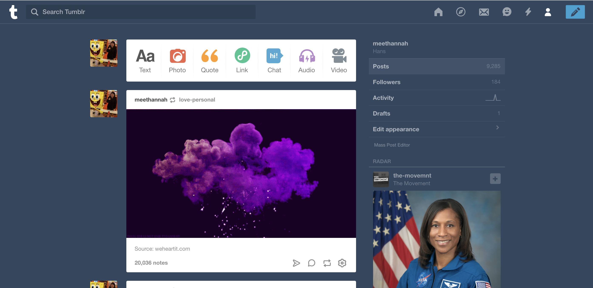

a user interface that I use quite often is pretty well-known: Tumblr.com. I use Tumblr to pass the time, gather ideas on aesthetics, and blog out my emotions. Ever since I started using Tumblr in middle school, I’ve navigated the website with ease. Tumblr features endless scrolling and a like / reblog button; these features encompass a fairly simple interface. Though it has changed over the years, the interface has become even more friendly. A large “toolbar” sits at the top of the page, allowing the user to easily create a new text post, or post a photo, quote, video, etc. Much of what you can do on Tumblr is available to you on your account’s dashboard. This creates a more personable interface -- it feels like your own online journal complete with a carefully chosen feed and unique posts. The visual design of Tumblr displays the familiar flat design and iconic “Tumblr blue”. Icons, slight variations of the “Tumblr blue”, and sans-serif fonts create a simple yet still modern web design. All these characteristics tie together to create an aesthetic and time consuming user interface that has lasted through the ages.
